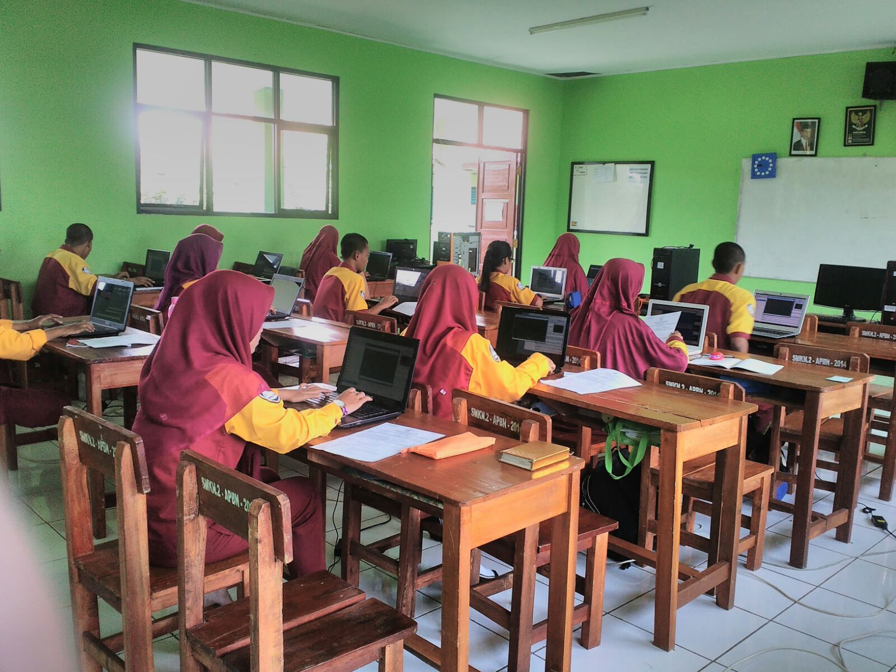

Sukses Menghadapi Uji Kompetensi Kejuruan (UKK)

Ujian Kompetensi Keahlian atau UKK adalah ujian akhir yang wajib diikuti oleh seluruh siswa-siswi SMK khususnya kelas XII dengan mempraktekan keahlian sesuai dengan kejuruan yang kita ikuti di SMK. Peserta UKK akan diberikan paket soal berisikan perintah-perintah yang harus dipraktekan dengan baik dan biasanya penguji UKK berasal dari profesional industri yang sesuai dengan kompetensi keahlian yang peserta UKK ikuti. Sebagai siswa SMK saat itu tentunya muncul rasa resah dan gelisah terlebih ketika beberapa hari menjelang UKK atau Ujian Kompetensi Keahlian dilaksanakan.
Tips Menghadapi UKK Atau Uji Kompetensi Keahlian
1. Perbanyak Ibadah
Ibadah merupakan persiapan diri paling mendasar yang harus dilakukan, dengan lebih mendekatkan diri kepada Tuhan Yang Maha Esa niscaya kepercayaan diri kita semakin meningkat. Hati kita menjadi lebih tenang dalam belajar, dan lebihnya lagi ilmu yang kita pelajari akan semakin berkah. Tentunya ibadah yang dilakukan jangan hanya ketika menjelang UKK, lanjutkan kebiasaan ibadah secara terus menerus.
2. Menjaga Kesehatan
Kesehatan diri sangat perlu diperhatikan menjelang UKK atau Uji Kompetensi Keahlian. Jangan sampai saking giatnya kita belajar untuk mempersiapkan diri malah berdampak pada kesehatan diri kita.Yang akhirnya malah membuat badan tidak sehat ketika UKK. Atur pola makan dan pola istirahat lebih disiplin lagi. Kurangi bermain atau nongkrong bersama teman-teman, apalagi jika sampai lupa waktu, pulang larut malam. Ada banyak kerugian yang terjadi jika kita sering menghabiskan waktu untuk sekedar nongkrong hingga larut malam.
3. Membuat Kelompok belajar
Belajar sendirian memang baik, namun apabila belajar bersama-sama tentunya akan lebih baik lagi. Ilmu yang disampaikan dan dibagi bersama-sama memiliki efek yang lebih besar ketimbang belajar sendirian. Atur waktu yang tepat bersama-teman diluar jam sekolah. Lebih asyik lagi apabila ada teman yang memiliki peralatan praktek yang cukup memadai.
4. Mohon Doa Restu
Orang tua beserta guru kita memiliki peran penting bagi kehidupan kita selama belajar dan bersekolah. Prestasi yang kita banggakan tentunya akan dibanggakan oleh orang tua dan guru kita. Oleh karenanya jangan lupa untuk selalu memohon doa restu serta nasehat-nasehat yang berharga karena bisa jadi itu adalah kunci untuk kita agar bisa sukses di dunia dan akhirat.